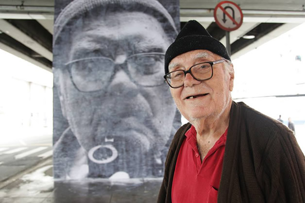
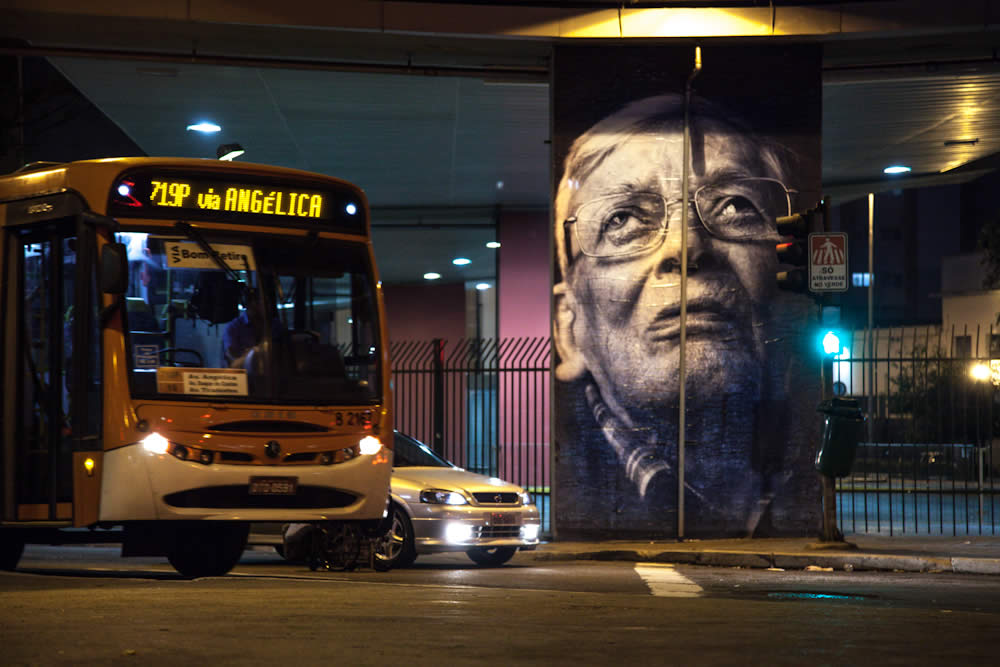
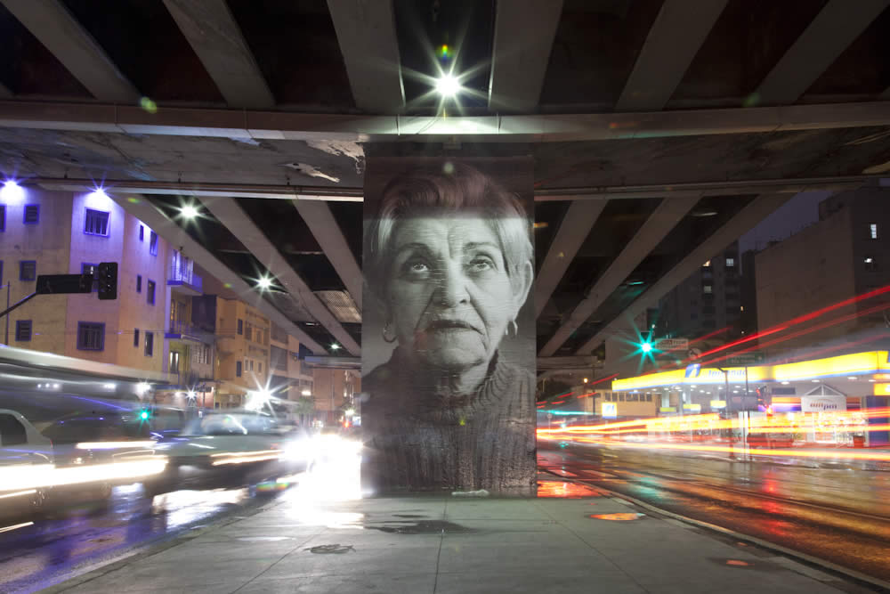
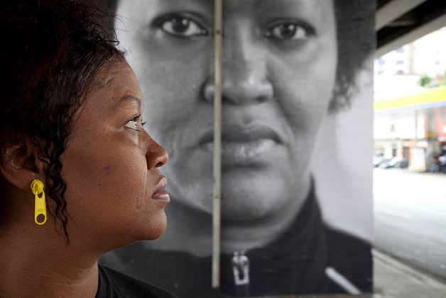
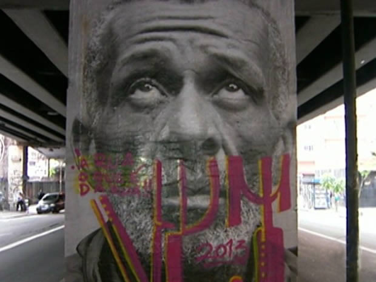

Mnhocão em SP ganha galeria de arte a céu aberto com rostos dos moradores
Minhocão em SP ganha galeria de arte a céu aberto com rostos dos moradores
Exposição da artista brasileira Raquel Brust corresponde à obra Giganto, agora faz parte do Festival Internacional de fotografia PhotoEspaña. Ao todo são 20 pilares do Minhocão com retratos em close,num tamanho aproximado de seis metros de altura, de moradores dos prédios que têm como visual principal o elevado e seus congestionamentos, de trabalhadores do entorno e até de quem tem o Minhocão como teto.
As fotos estão espalhadas entre os acessos da rua da Consolação até o terminal de ônibus na Amaral Gurgel, no centro. Começou em 16 de outubro e permanecerá ncidade é 25 de aneiro. 

No dia 23 de outubro uma das fotos amanheceu pichada. Quando iniciou as instalações, Brust disse que estava preparada possíveis pichações. "Provavelmente vai acontecer, mas é natural."
